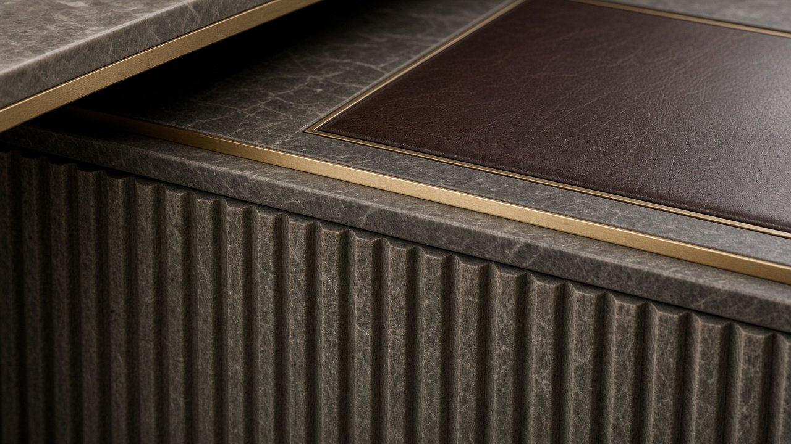
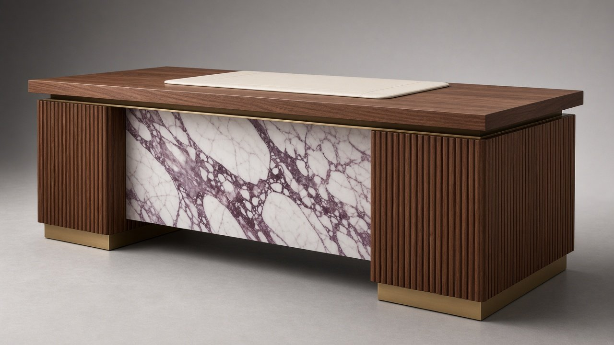

x.classList.remove('on'));this.classList.add('on')">
x.classList.remove('on'));this.classList.add('on')">← Coleção
N.º 04 · Coleção Meridiano
ZÊZERE
Secretária executiva
Dois pedestais de nogueira canelada enquadram um painel frontal de Calacatta Viola — a pedra como obra de arte.
Preço desde 16.000 €sem IVA · valor indicativo · versões por medida sob consulta
Descarregar ficha técnica (PDF)
Dimensões
| L × P × A | 2000 × 900 × 750 mm |
| Superfície de escrita | 1000 × 500 mm |
| Altura útil | 710 mm |
Materiais
| Tampo | Nogueira americana |
| Pele | Plena flor semi-anilina Marfim |
| Pedestal | Nogueira canelado |
| Pedestal | Nogueira canelado |
| Painel frontal | Calacatta Viola |
| Metais | Latão e bronze escovados |